00:00:00
大家好，今天我們聊明英宗朱祁鎮回國的故事。朱祁鎮是歷史上很罕見的被敵人擄走又平安回國的皇帝，跟他經歷比較像的是北宋的宋徽宗和宋欽宗，但是徽欽二宗被擄走之後慘死在異國他鄉，再也沒能回國。朱祁鎮就比較幸運，他不僅成功回國，而且7年之後還通過奪門之變重新當上了皇帝。其實朱祁鎮回國的過程也是陰差陽錯，他能平安回國也是種種巧合，這中間有各方面的利益糾纏，最後的形勢居然是瓦刺方面拼命的想把他送回去，大明方面又怎麼都不肯接。朱祁鎮到底是怎麼回去的，今天我們就來聊聊這段朱祁鎮回國的故事。
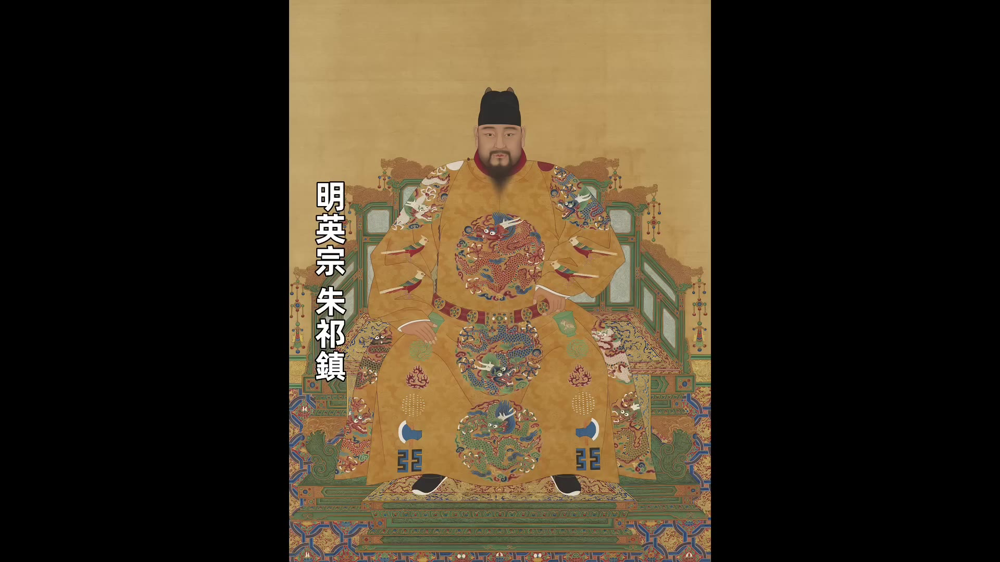
我們上期節目講了北京保衛戰，在北京保衛戰之後，瓦刺大軍撤退，然後瓦刺內部產生了矛盾。瓦刺部落內部其實一直都有矛盾，只不過之前也先一直都是打勝仗，矛盾就被掩蓋了，現在也先接連吃了敗仗，矛盾就暴露出來了。也先在部落裡面自稱是太師，奉黃金家族的後代，脫脫不花為可汗，脫脫不花實際上沒有權力，是傀儡大汗，一切實權都掌握在也先手裡。現在他看也先戰敗，就想脫離也先的掌控，他派人給明朝送信說根向明朝朝貢，取得明朝的支持。脫脫不花主動來臣服，明朝肯定歡迎，這正是分化脫脫不花和也先的好機會。
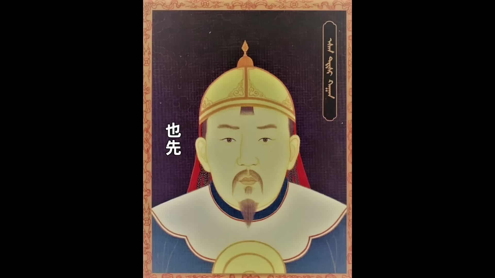
也先得到這個消息之後，也派使者到北京說想要跟明朝修好，還說可以送太上皇明英宗回國，換得跟明朝朝貢的機會。關於也先的求和，在明朝朝堂上發生了很多的討論，有的大臣就認為也先來求和應該接受，但是于謙堅決反對，于謙說也先剛打了敗仗，這很可能又是他的伎倆，我們不能中計，不能議和，還是要加強防禦，加強我們自身的實力。
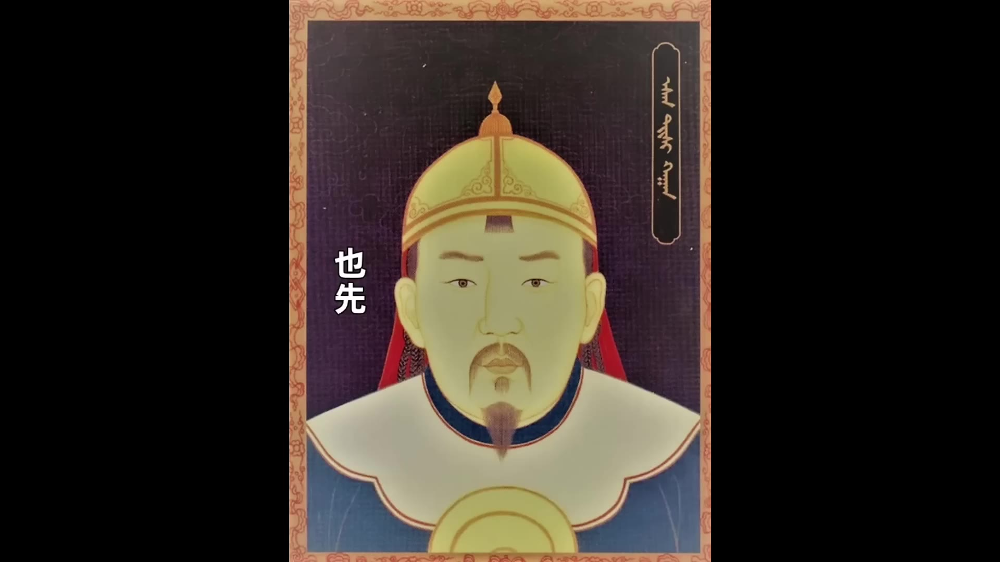
在北京保衛戰之後，于謙在朝堂上的地位非常高，很多大臣都支持他，包括景帝，景帝對於謙也是言聽計從。實際上于謙不同意議和，因為景帝是最不希望英宗回國的人，要是真跟瓦剌議和也把英宗給送回來了，那誰當皇帝？他要不要把皇位還給英宗？就算不用還，還讓他當皇帝，但是英宗仍然有太上皇的名位，有大上皇在身邊，他行事又豈能不受到掣肘？景帝登基的時候雖然說他推脫不想當皇帝，但那是因為當時的情況很惡劣，當了皇帝很可能變成替死鬼，現在的形勢已經好轉了，而且皇帝這個位置一旦當上了，誰也不想讓出去。
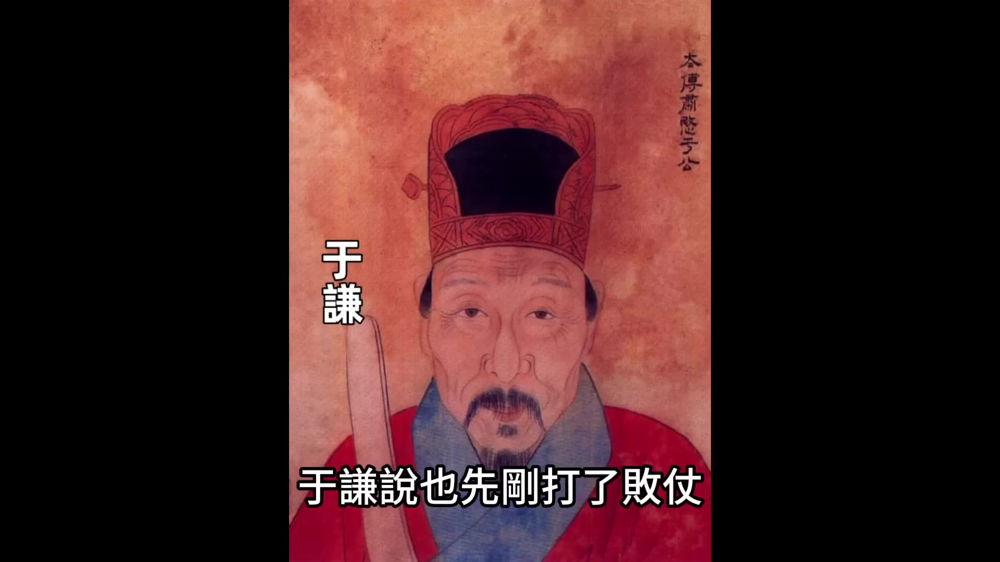
所以于謙主戰，景帝立刻同意，他下旨命令朝中的大臣和各個要塞的將領都不准私自與也先聯絡。于謙也重新佈置國防工事，他把京師和邊關的防禦都加強了一遍。也先求和失敗，他只能繼續打，因為他是不能跟大明相安無事的。蒙古部落的糧食不夠，出於生存壓力，他們要麼靠搶劫明朝邊關地區獲得補充，要麼靠跟大明朝貢貿易從朝貢貿易裡面獲得他們需要的糧食和物資。也先能統一蒙古草原就是之前他從大明的朝貢貿易裡面獲得了大量的好處，然後他把這些好處分配給草原各個部落的首領。現在他打仗失利，跟大明議和又遭到拒絕，否則沒法維持自己在草原的地位。既然要打，就需要新的戰略。
喜寧給也先出謀劃策，喜寧我們在上期節目裡面介紹過，他是英宗身邊的太監，英宗被俘虜之後他也跟著一起被俘虜，然後他投降叛變。由於喜寧對明朝非常熟悉，所以也先很重視喜寧的意見。之前也先帶著英宗去邊關勒索，然後去打北京城都是喜寧給也先出的主意。這次喜寧再次給也先出的主意是去打南京，既然北京不好打，那就去打南京。他跟也先說可以從寧夏進兵，然後從西北方向一路打到南京。到南京之後，南京本來就是大明的陪都，咱們可以在南京立英宗為帝，然後跟北京的景帝分庭抗禮，這樣大明內部就會混亂，咱們就能有機可乘。也先聽了喜寧的這個建議覺得非常好，但是寧夏的邊防軍早有準備，于謙之前把明朝的邊防防禦都給加強了。打寧夏不行，也先又去打大同，大同的守將是郭登，成功打退了瓦刺的進攻。折騰兩次之後，也先看軍事行動不行，他又想跟大明議和，議和他手裡面唯一的籌碼就是英宗。
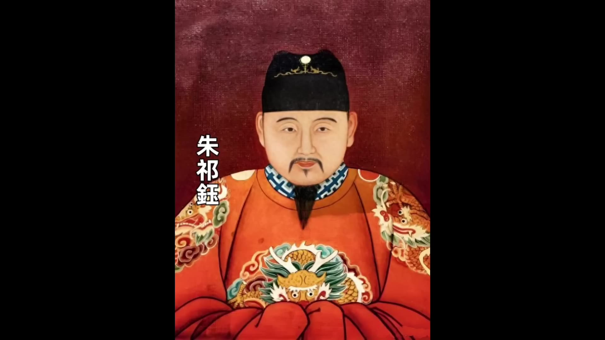
00:05:00
他跟英宗說：「我可以放你回去。」
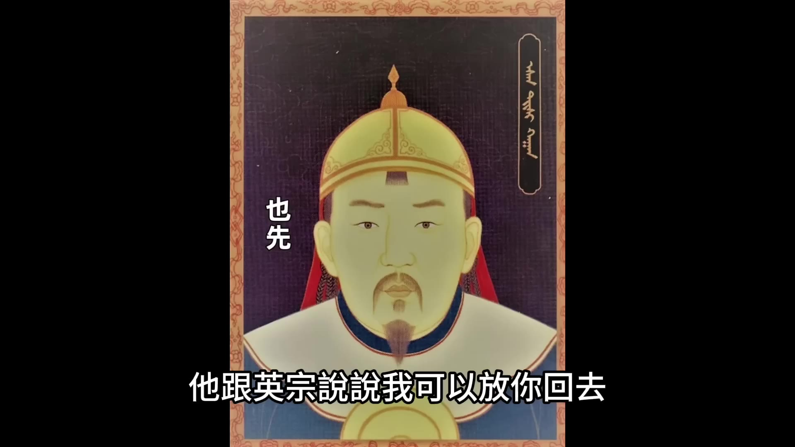
但是需要達成議和、恢復朝貢。英宗當然想回去，也配合也先，他說可以派使者去見他的母親孫太后，由孫太后下令和瓦剌議和。也先覺得這個方案可行，他說必須要派一個有身份的人去談。要不明朝的景帝已經下過命令，所有邊關將領都不准接受瓦剌使者的聯絡。也先認為喜寧是最適合的人，大家都知道喜寧是英宗身邊的人，而且喜寧是宦官，跟太后也熟識。英宗同意喜寧去，不過他說：「說明朝上下現在都痛恨喜寧，一見到他沒准直接給殺了。」我們要再派一個人給他證明。也先決定讓錦衣衛高磐陪同喜寧一起去，以證明喜寧確實是太上皇的使者。英宗就寫下一封親筆信讓喜寧帶去談判。
喜寧帶上高磐等人來到宣府，他到宣府城下之後說自己是奉太上皇英宗的命令前來交涉。宣撫守將一聽是太上皇的使者，就放喜寧入城接待。接待喜寧的將領是都指揮使江福，江福設宴款待。這時候錦衣衛高磐趁喜寧不備，把一封密信交給了江福。江福找了個理由出去，打開密信一看是英宗的親筆信，英宗讓明朝務必找機會殺了喜寧。原來英宗早就恨透了喜寧，喜寧叛變之後對英宗態度非常惡劣，他知道也先幾次押著他去明朝邊關勒索都是喜寧出的主意。要是喜寧不死，他很難重返大明，所以這次也先提議讓喜寧去當使者，英宗表面不露聲色，內心早就做了要趁機要除掉喜寧的打算，他寫了一封密信交給高磐，讓高磐一定要交到明軍將領手上。
江福看了密信之後立刻把喜寧抓捕，然後押送到北京。喜寧被押到北京之後如何處理，在朝堂上引起了很大爭議。喜寧叛孌，但是他現在的身份是也先的使者，而且也先很信任他，要是殺了他就代表堵死了議和的路，搞不好也先又會再次發動大規模戰爭。所以朝廷上下都猶豫不決。這時候又是于謙站出來，于謙態度很堅決。
堅持要殺喜寧，于謙說：「喜寧本來是朝廷的腹心，現在背叛朝廷成為了胡虜的腹心，要是不殺他就讓胡虜對我們有輕視之心，禍亂將永遠都不能終止。」殺喜寧就代表不議和，不議和就代表不用迎回英宗。所以景帝也同意。景帝同意之後，喜寧就被凌遲處死。也先的求和又一次失敗，國的盼頭也又一次落空。英宗回議和失敗之後，從三月到五月朔州，也先接連派兵進攻慶陽、陽和、天城、野狐嶺等邊關，明朝和瓦剌軍接戰各有勝負。
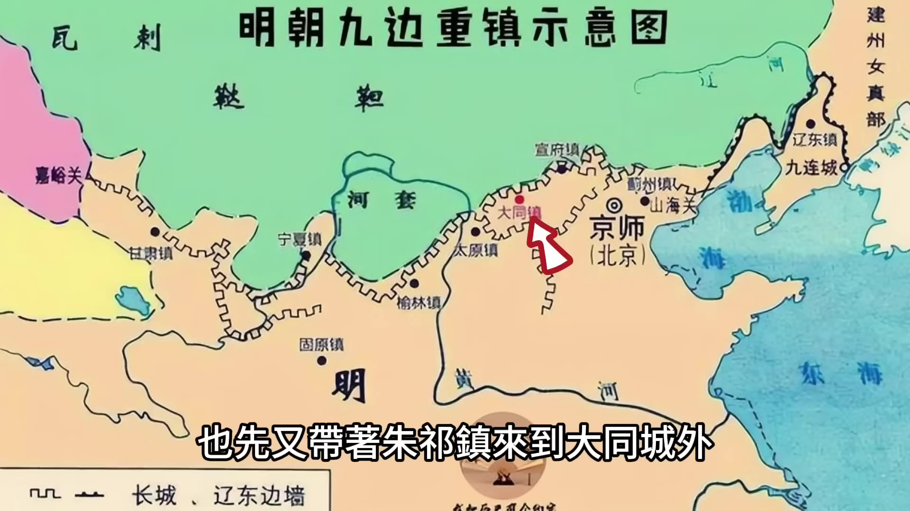
也先又帶著朱祁鎮來到大同城外，表示要送還太上皇，讓郭澄打開城門。郭登將計就計，他在城上設置伏兵，在月城內迎接太上皇，他想等太上皇一入城他就立刻放下月城的門閘，想要救出太上皇。也先送英宗進城門的時候，他發現了明軍有埋伏，他立刻就挾持著英宗逃走。到此為止，也先也沒有任何辦法了，也沒有任何計策了。英宗這個奇貨不一定可居，而且還變成了燙手的山芋，因為他發現了大明的朝廷好像並不想接英宗回去。英宗要是送不回去，就沒法跟大明議和，不能議和就沒法恢復朝貢貿易。所以到此為止，也先開始真心的想辦法怎麼能把英宗給送回去。
我們說一下英宗被俘虜之後的處境。英宗被瓦剌抓走這一段明朝的官方歷史的說法叫「正統北狩」。「北狩」當然是一種粉飾的說法。在編修《明英宗實錄》的時候，明朝的史官是有選擇的採用了袁彬和楊善記錄的有利於明英宗形象的版本。記載英宗北狩的當事人大概可以分成兩類：一起被俘虜的隨員。這裡面最重要的人是兩個侍衛，一個是袁彬。這兩個人是在英宗被俘虜之後跟英宗朝夕相處的人。袁彬是英宗的貼身侍衛，英宗被俘虜之後他的一切的衣食住行一切事務都是袁彬在服侍。哈銘也是英宗的侍衛，他是蒙古人，他的父親是明朝的通事（就是翻譯官），所以哈銘他全家都屬於依附於明朝的蒙古人。由於哈銘會蒙古語，所以英宗被俘虜期間他就擔任英宗和蒙古人溝通的翻譯。關於英宗北狩期間發生的事，袁彬和哈銘都留下了記錄，但是他們兩個的描述卻是大相徑庭。袁彬寫的著作叫《北征事跡》，他寫的總體風格是英宗雖然被俘虜……
00:10:02
然而關於英宗被俘後的處境，不同當事人留下的記錄卻呈現出截然不同的面貌。袁彬所記載的版本中，瓦剌首領也先對英宗表現出極度的敬畏——當英宗初被俘時，瓦剌軍中曾有人圖謀加害，但當夜突降暴雨雷電，驚駭馬匹，雨後更出現赤色光暈籠罩英宗帳篷的異象，此後也先對英宗行大禮磕頭，自此對其倍加尊敬。行軍期間，英宗的飲食起居均受優待，也先甚至頻繁設宴款待，其弟伯顏帖木兒更以殺牛宰羊的隆重儀式侍奉英宗。袁彬在《正統臨戎錄》中強調，英宗本人氣度非凡，其帝王氣度震懾了瓦剌士兵。
與此同時，哈銘的記述卻描繪出另一幅畫面。他指出英宗被瓦剌裹挾轉戰於宣府、大同與北京之間，因不會騎馬且無馬車，只能被士兵驅趕，備嘗艱辛。抵達伯顏帖木兒所居的「老營」後，英宗衣物遭人搶奪，雖伯顏帖木兒夫妻曾贈予物品，卻又被瓦剌人搶光，導致英宗缺少過冬衣物。英宗多次央求哈銘向也先請求遣返，其表現近乎戰俘，面對也先等人亦唯唯諾諾。哈銘的記載與袁彬版本形成鮮明對比。
另一類當事人為出使瓦剌的明朝使臣李實與楊善。李實所著《北使錄》與哈銘記述相似，描述英宗形象狼狽；而楊善的《奉使錄》則與袁彬風格相近，強調英宗受尊重。這四份記錄成為後世史官的重要原始資料，但《明英宗實錄》與《明史》明顯傾向採用袁彬與楊善的版本，刻意淡化英宗受苦的細節，以符合「為尊者諱」的史筆傳統。此後英宗復位後，袁彬與楊善因替其粉飾而迅速陞遷，哈銘雖未刻意美化卻仍獲升官但職位不高，李實則因《北使錄》被指「妄謬誇大」遭免官且家族永不得敘用。
關於英宗遣返問題，也先多次挾持英宗與明廷議和，要求提供財物以換取釋放。英宗曾親歷北京城下，見家國近在咫尺卻無能為力，對拒絕議和的于謙心存怨恨。然而當也先真誠表態願送還英宗時，英宗重新燃起希望，卻因目睹弟弟景帝朱祁鈺的態度而再次失望。
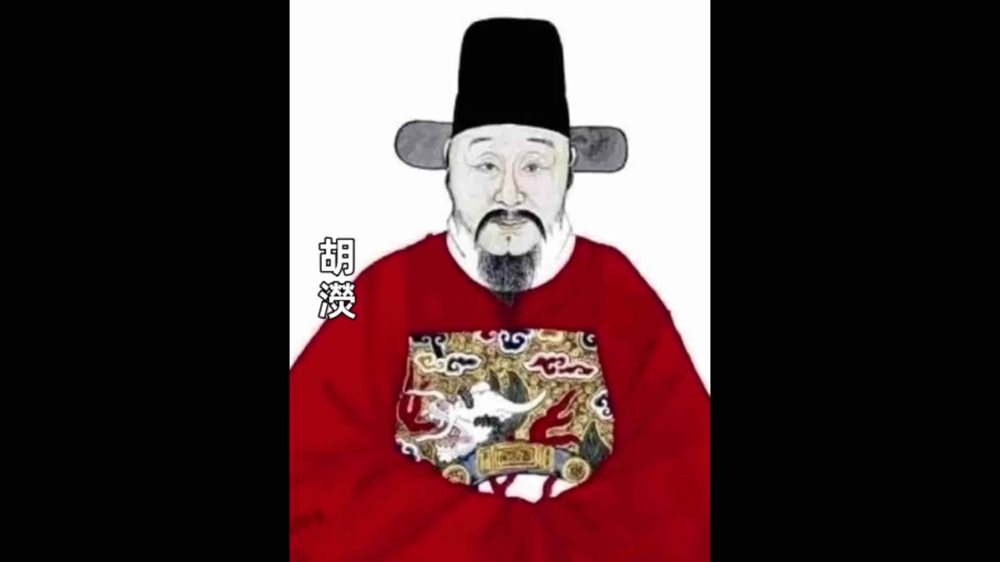
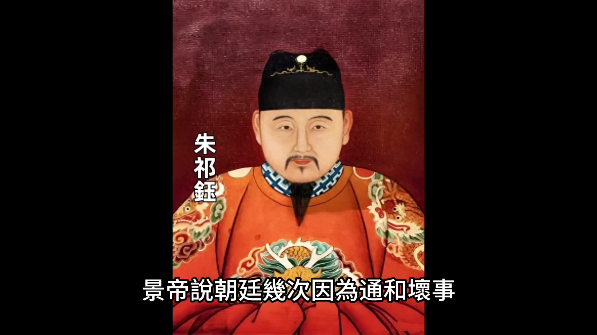
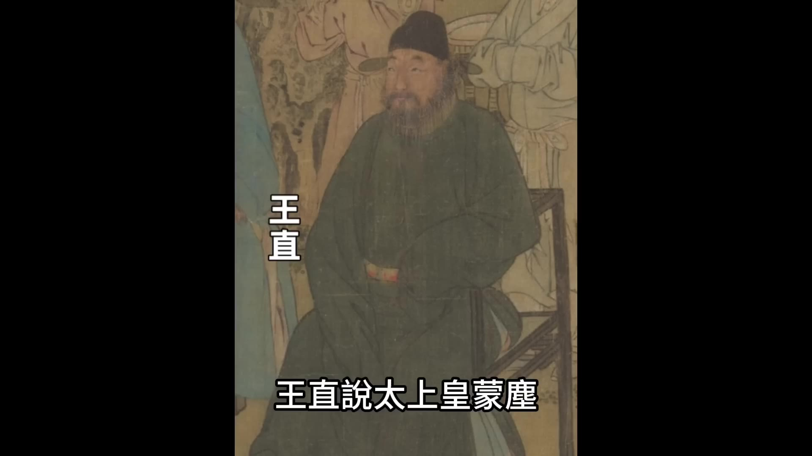
此後朝廷大臣對議和議題產生分歧，吏部尚書王直雖知皇帝意圖，仍上奏力主迎回太上皇，其言「太上皇蒙塵」一語，道盡當時朝局的緊張與矛盾。
00:15:02
理應奉迎回國現在瓦刺既然有意歸還請陛下務必要遣使迎駕免致後悔景帝—聽臉色就變了他說我不是貪戀皇位當時是你們非要我坐在這裡你們現在出爾反爾我真搞不懂你們是什麼心理景帝顯然是急了還沒有人暗示讓他讓出皇位呢只不過說讓他迎回兄長他就動怒了群臣一看皇帝這麼說一時間都不知道應該如何應答還是于謙站出來解決問題
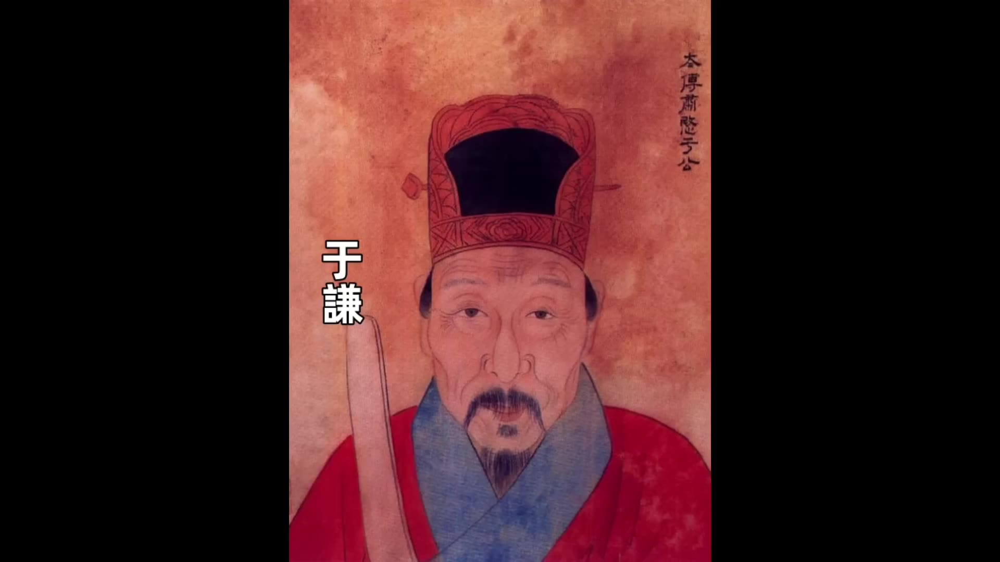
_于謙說皇位現在完全確定了任何人不敢有其他意見不過就情理而言也先答應送還我們應該速派人迎回太上皇即使是也先有詐則曲在對方理在我們我們也就有話可說了景帝一聽皇位有了保障于謙說的也合情合理他也就同意了群臣商議之後決定派禮科給事中李實為使臣因為李實的口才特別好他被臨時賦予重任為了讓出使的規格高一景帝給李實升職為禮部右侍郎李實帶著景帝的敕書率領使團出發李實很心細他剛出發就發現自己手裡的敕書只提到了議和並沒有提到迎駕很顯然這不是景帝疏忽而是有意為之李實這就為難了他到瓦刺之後要是提出迎回太上皇就是得罪了景帝要是不提就是得罪了英宗而且自己還白來一趟沒完成任務十天之後李實到達瓦刺境內他向也先奉上敕書然後也先帶他去見英宗朱祁鎮李實看到英宗住的地方英宗跟蒙古人一樣也是睡在帳篷裡面也是席地而寢外面有一輛牛車和一匹馬他想英宗應該就是乘著這輛牛車被挾持著四處奔波看到這個場景李實不由得大為心酸英宗見到李實顯得非常激動畢竟這是朝廷第一次派來議和的使臣英宗問我在此一年了為何朝廷不派人迎我回李實回答說自從陛下失陷在瓦刺朝廷曾經三次派人迎接都得不到確實消息最近見到陛下的親筆書信才派我來探問英宗心潮澎湃問了李實很多朝中的情況他逐漸就明白了是他弟弟不希望自己回去其實是怕他復位他流著淚對李實說說也先有意送我回去請你轉告朝廷我回去之後只求做一個平民便已心滿意足英宗這是表達了自己不會再爭皇位_
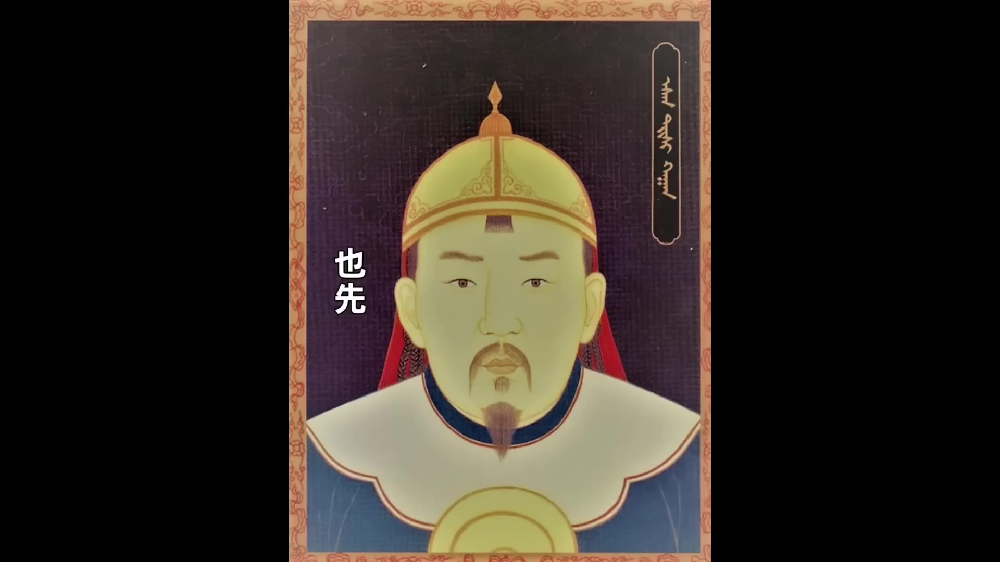
_也先看了敕書之後對李實說說明朝敕書裡面只說了議和沒說迎駕太上皇留在我這裡只是一個閒人我還給你們不要什麼千載之後只圖一個好名你們回去奏知務必差三五個老臣來迎接我就派人把太上皇送回去李實議和和這些事情都談妥之後就啓程返回北京李實在返程的路上居然碰到了另外一隊明朝派去出使瓦刺的使臣原來是也先求和心切也先接連派出了兩隊催促議和的使者李實他們從京城出發之後瓦刺的另外一隊使者也到達北京于謙和一眾大臣都主張再派使者去迎接太上皇景帝雖然不願意但是情勢如此他也勉強答應於是朝廷就又派楊善為使者再次出使瓦刺景帝交給楊善的敕書裡面依然沒有提到迎接太上皇的內容朝廷給楊善準備出使帶的禮物也沒有給英宗的物品只有一些送給也先的禮物楊善看過敕書之後他動了和李實不一樣的心思他認為把太上皇迎回來是蓋世奇功他就用自己的全部家當給英宗買了很多衣食物品他還買了很多被塞外視為珍品的東西比如布帛、網緞、茶葉、藥材等等他要用這些東西來買通瓦刺人楊善到了瓦刺境內之後見到也先他把敕書遞交給也先也先看敕書上面依然沒有奉迎太上皇的話語他就問楊善是怎麼回事楊善說這是為了尊重太師成就太師的美名否則就帶有強迫的意味不能顯示出太師的誠心了也先繼續問為什麼不多帶些貴重財寶來贖楊善說那樣就會叫人們說太師圖和現在不那樣做正是要表現出太師是行仁義的好男子可以名垂史冊流傳千古也先一聽很高興本來他就想把英宗送回去他就借坡下驢送英宗回朝楊善在敕書沒有提到的情況下完全憑自己的能力把英宗給迎回國他確實是給英宗立下了大功後來英宗復位之後楊善受到重用官居高位享受富貴哪怕他受到其他朝臣的排擠英宗都一直庇護他_
景泰元年8月2號也先給英宗餞行他親自送英宗送到數十外然後摘下自己的弓箭
00:20:01
送給英宗作為禮物，也先的弟弟伯顏帖木兒更是跟英宗表現得情深意重。他送英宗一直送到野狐嶺，然後揮淚告別，這是瓦剌送別英宗的場面，場面隆重而且深情。明朝迎接英宗回國則是另外一種場面，關於要以什麼樣的儀式迎接太上皇，朝廷裡面產生了很大的分歧。這個事是由禮部來主辦，禮部尚書胡濙擬定的流程是首先由錦衣衛攜帶全副鑾駕在居庸關外迎候太上皇，接到太上皇入關之後走龍虎台，由禮部官員向太上皇陳述禮儀程序，文武百官在土城外迎接太上皇鑾駕，然後鑾駕從安定門進城，進城之後走東安門到東安門內，面朝南向設座位，景泰帝謁見，百官朝見，最後引入南內。
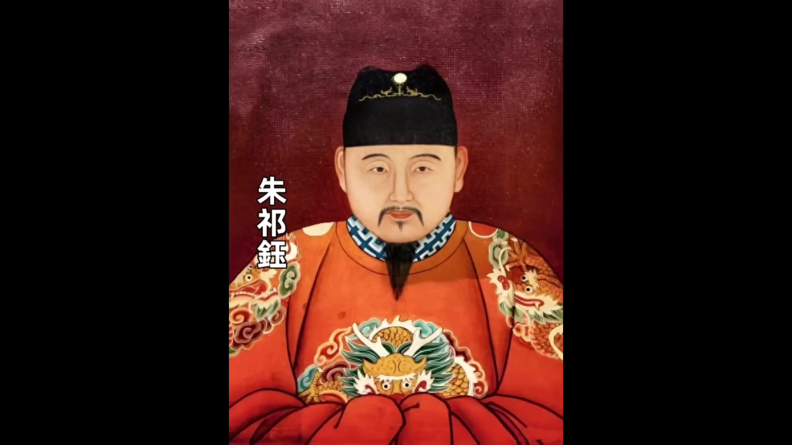
景帝看到這個流程之後認為禮儀過重，應該從簡，他自包重新擬定流程，他定的是以一轎二馬迎於居庸關外，然後從安定閂進城，進城之後再換座駕。景帝擔心要是讓英宗大張旗鼓地回京會彰顯英宗的地位，要是有大臣趁機提出來擁護英宗復位，這就不好辦了，所以他安排迎接流程一切從簡。所以英宗回京的場面跟瓦剌送行的場面一對比，他沒想到自己的親弟弟待自己居然如此薄情。景泰元年8月15號，英宗到達北京城外，距離他被俘虜整整一年時間，一轎二馬悄然進入安定門。城內的百姓都不知道轎子裡面坐的居然是太上皇，景帝率領文武百官在東安門外迎接英宗，下轎之後兄弟兩人嘘寒問暖，彼此謙讓了一番，然後英宗就被送進了南宮居住。
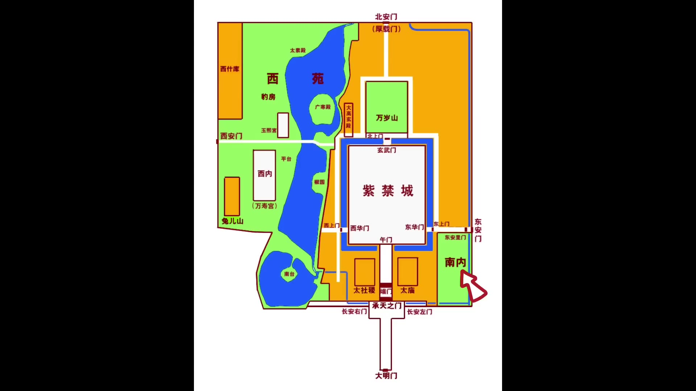
南宮亦稱南內，位於紫禁城外皇城之內，東華門的東面，這是景帝專門給英宗安排的地方。英宗住進南宮之後，景帝下令封鎖了南宮的出入口，並且在英宗身邊安插了自己人，使得英宗的一舉一動都在他的監視之下。英宗自從進入南宮開始就過上了被幽禁的生活，直到7年之後發生奪門之變。好了，今天的故事就講到這裡。T1921-1945年的專題歷史課程，我開通了，有興趣的朋友歡迎點擊影片下方鏈接瞭解，歡迎大家點贊關注。
00:00:00
大家好今天我們聊明英宗朱祁鎮回國的故事朱祁鎮是歷史上很罕見的被敵人擄走又平安回國的皇帝跟他經歷比較像的是北宋的宋徽宗和宋欽宗但是徽欽二宗被擄走之後慘死在異國他鄉再也沒能回國
朱祁鎮就比較幸運他不僅成功回國而且7年之後還通過奪門之變重新當上了皇帝其實朱祁鎮回國的過程也是陰差陽錯他能平安回國也是種種巧合這中間有各方面的利益糾纏最後的形勢居然是瓦刺方面拼命的想把他送回去大明方面又怎麼都不肯接朱祁鎮到底是怎麼回去的今天我們就來聊聊這段朱祁鎮回國的故事
我們上期節目講了北京保衛戰在北京保衛戰之後瓦刺大軍撤退然後瓦刺內部產生了矛盾瓦刺部落內部其實一直都有矛盾只不過之前也先一直都是打勝仗矛盾就被掩蓋了現在也先接連吃了敗仗矛盾就暴露出來了
也先在部落裡面自稱是太師奉黃金家族的後代脫脫不花為可汗脫脫不花實際上沒有權力是傀儡大汗一切實權都掌握在也先手裡
現在他看也先戰敗就想脫離也先的掌控他派人給明朝送信說根向明朝朝貢取得明朝的支持脫脫不花主動來臣服明朝肯定歡迎這正是分化脫脫不花和也先的好機會
也先得到這個消息之後也派使者到北京說想要跟明朝修好還說可以送太上皇明英宗回國換得跟明朝朝貢的機會關於也先的求和在明朝朝堂上發生了很多的討論有的大臣就認為也先來求和應該接受但是于謙堅決反對于謙說也先剛打了敗仗
這很可能又是他的伎倆我們不能中計不能議和還是要加強防禦加強我們自身的實力在北京保衛戰之後于謙在朝堂上的地位非常高很多大臣都支持他包括景帝景帝對于謙也是言聽計從實際上于謙不同意議和
因為景帝是最不希望英宗回國的人要是真跟瓦剌議和也把英宗給送回來了那誰當皇帝他要不要把皇位還給英宗就算不用還還讓他當皇帝但是英宗仍然有太上皇的名位有大上皇在身邊他行事又豈能不受到掣肘景帝登基的時候雖然說他推脫不想當皇帝但那是因為當時的情況很惡劣當了皇帝很可能變成替死鬼現在的形勢已經好轉了而且皇帝這個位置一旦當上了誰也不想讓出去
所以于謙主戰景帝立刻同意他下旨命令朝中的大臣和各個要塞的將領都不准私自與也先聯絡于謙也重新佈置國防工事他把京師和邊關的防禦都加強了一遍也先求和失敗他只能繼續打因為他是不能跟大明相安無事的蒙古部落的糧食不夠出於生存壓力他們要麼靠搶搶劫明朝邊關地區獲得補充要麼靠跟大明朝貢貿易從朝貢貿易裡面獲得他們需要的糧食和物資也先能統一蒙古草原就是之前他從大明的朝貢貿易裡面獲得了大量的好處然後他把這些好處分配給草原各個部落的首領現在他打仗失利跟大明議和又遭到拒絕否則沒法維持自己在草原的地位既然要打就需要新的戰略喜寧給也先出謀劃策喜寧我們在上期節目裡面介紹過他是英宗身邊的太監英宗被俘虜之後他也跟著一起被俘虜然後他投降叛變由於喜寧對明朝非常熟悉所以也先很重視喜寧的意見之前也先帶著英宗去邊關勒索然後去打北京城都是喜寧給也先出的主意這次喜寧再次給也先出的主意是去打南京既然北京不好打那就去打南京他跟也先說說可以從寧夏進兵然後從西北方向一路打到南京到南京之後南京本來就是大明的陪都咱們可以在南京立英宗為帝然後跟北京的景帝分庭抗禮這樣大明內部就會混亂咱們就能有機可乘也先聽了喜寧的這個建議覺得非常好但是寧夏的邊防軍早有準備
于謙之前把明朝的邊防防禦都給加強了
打寧夏不行也先又去打大同大同的守將是郭登成功打退了瓦刺的進攻折騰兩次之後也先看軍事行動不行他又想跟大明議和議和他手裡面唯一的籌碼就是英宗
00:05:00
他跟英宗說說我可以放你回去
但是需要達成議和恢復朝貢英宗當然想回去他也配合也先他說可以派使者去見他的母親孫太后由孫太后下令和瓦刺議和也先覺得這個方案可行他說必須要派一個有身份的人去談要不明朝的景帝已經下過命令所有邊關將領都不准接受瓦刺使者的聯絡也先認為喜寧是最適合的人大家都知道喜寧是英宗身邊的人而且喜寧是宦官跟太后也熟識英宗同意喜寧去不過他說說明朝上下現在都痛恨喜寧一見到他沒准直接給殺了我們要再派一個人給他證明也先決定讓錦衣衛高磐陪同喜寧一起去以證明喜寧確實是太上皇的使者英宗就寫下一封親筆信讓喜寧帶去談判喜寧帶上高磐等人來到宣府他到宣府城下之後說自己是奉太上皇英宗的命令前來交涉宣撫守將一聽是太上皇的使者就放喜寧入城接待喜寧的將領是都指揮使江福江福設宴款待這時候錦衣衛高磐趁喜寧不備把一封密信交給了江福江福找了個理由出去打開密信一看是英宗的親筆信英宗讓明朝務必找機會殺了喜寧原來英宗早就恨透了喜寧喜寧叛變之後對英宗態度非常惡劣他知道也先幾次押著他去明朝邊關勒索都是喜寧出的主意要是喜寧不死他很難重返大明所以這次也先提議讓喜寧去當使者英宗表面不露聲色內心早就做了要趁機要除掉喜寧的打算他寫了一封密信交給高磐讓高磐一定要交到明軍將領手上
江福看了密信之後立刻把喜寧抓捕然後押送到北京喜寧被押到北京之後如何處理在朝堂上引起了很大爭議喜寧叛孌但是他現在的身份是也先的使者而且也先很信任他要是殺了他就代表堵死了議和的路搞不好也先又會再次發動大規模戰爭所以朝廷上下都猶豫不決這時候又是于謙站出來于謙態度很堅決
堅持要殺喜寧于謙說喜寧本來是朝廷的腹心現在背叛朝廷成為了胡虜的腹心要是不殺他就讓胡虜對我們有輕視之心禍亂將永遠都不能終止殺喜寧就代表不議和不議和就代表不用迎回英宗所以景帝也同意景帝同意之後喜寧就被凌遲處死也先的求和又一次失敗國的盼頭也又一次落空英宗回議和失敗之後從三月到五月朔州也先接連派兵進攻慶陽、陽和、天城、野狐嶺等邊關明朝和瓦剌軍接戰各有勝負
也先又帶著朱祁鎮來到大同城外表示要送還太上皇讓郭澄打開城門郭登將計就計他在城上設置伏兵在月城內迎接太上皇他想等太上皇一入城他就立刻放下月城的門閘想要救出太上皇也先送英宗進城門的時候他發現了明軍有埋伏他立刻就挾持著英宗逃走到此為止也先也沒有任何辦法了也沒有任何計策了英宗這個奇貨不一定可居而且還變成了燙手的山芋因為他發現了大明的朝廷好像並不想接英宗回去英宗要是送不回去就沒法跟大明議和不能議和就沒法恢復朝貢貿易所以到此為止也先開始真心的想辦法怎麼能把英宗給送回去
我們說一下英宗被俘虜之後的處境英宗被瓦剌抓走這一段明朝的官方歷史的說法叫「正統北狩』「北狩」當然是一種粉飾的說法在編修《明英宗實錄》的時候明朝的史官是有選擇的採用了袁彬和楊善記錄的有利於明英宗形象的版本記載英宗北狩的當事人大概可以分成兩類一起被俘虜的隨員這裡面最重要的人是兩個侍衛一個是袁彬這兩個人是在英宗被俘虜之後跟英宗朝夕相處的人袁彬是英宗的貼身侍衛英宗被俘虜之後他的一切的衣食住行一切事務都是袁彬在服侍哈銘也是英宗的侍衛他是蒙古人他的父親是明朝的通事就是翻譯官所以哈銘他全家都屬於依附於明朝的蒙古人由於哈銘會蒙古語所以英宗被俘虜期間他就擔任英宗和蒙古人溝通的翻譯關於英宗北狩期間發生的事袁彬和哈銘都留下了記錄但是他們兩個的描述卻是大相徑庭袁彬寫的著作叫《北征事跡》他寫的總體風格是英宗雖然被俘虜
00:10:02
但是帝王氣度不失瓦刺對大明的皇帝畢恭畢敬比如說他寫的一段內容是英宗最開始被俘虜的時候瓦刺軍中有人想要害英宗但是當天夜裡風雨大作雷電震死了馬匹雨停之後又有赤色的光罩定英宗的帳篷看到這個現象之後瓦刺的首領也先向英宗磕頭致敬從此對英宗都是尊敬有加然後行軍的時候英宗一直都受到優待飲食起居都被服侍的很好也先還經常設宴款待也先的弟弟伯顏帖木兒更是殺牛宰羊侍奉英宗英宗本人也是氣度非凡震懾了一眾胡虜這是袁彬記錄的版本哈銘寫的著作叫《正統臨戎錄》他描述的情形和袁彬完全不同他說英宗被瓦刺裹挾轉戰於宣府、大同和北京之間英宗不會騎馬又沒有馬車被瓦刺士兵一路驅趕備嘗艱辛後來到達老營英宗的衣服又被人搶走英宗非常氣憤伯顏帖木兒的妻子面分給英宗一些物品對了英宗被俘虜期間是住在也先的弟弟伯顏帖木兒的部落裡面他住的地方叫老營伯顏帖木兒夫妻兩人對英宗的態度還比較不錯伯顏帖木兒的妻子出面這些物品又被瓦刺人搶光導致英宗缺少過冬的衣物英宗的日子特別難熬英宗的心態也很不穩定他好幾次用央求的語氣跟哈銘說說你去跟也先說說方便的話就送我們回去吧在哈銘的記錄裡面英宗雖然沒有受到直接的侮辱但是也沒有得到多少優待和尊重面對來探視的也先等人英宗的表現更是唯唯諾諾
接近於戰俘的形象這是哈銘記錄的版本第二類當事人是出使瓦刺的明朝使臣主要有兩個使臣是李實和楊善他們分別出使去瓦刺談和他們在瓦刺部落裡面都見到了英宗他們也把自己出使的記錄都寫下來了李實寫的記錄叫《北使錄》楊善寫的記錄叫《奉使錄》他倆寫的也是大相徑庭楊善寫的風格就跟袁彬很相似極受尊重李實寫的風格就跟哈銘很類似說明英宗的形象比較狼狽沒有被很好的對待這四個人寫了四份記錄都是後人寫史的重要原始材料但是明朝人寫的《明英宗實錄》和清朝人寫的《明史》很明顯都是更多的採用了袁彬和楊善的版本就是「為尊者諱」把英宗寫的更加的光鮮亮麗更有帝王氣後來英宗重新當上皇帝之後這四個人的結局也不同替英宗粉飾的袁彬和楊善都被英宗火速提拔很快就官居高位哈銘雖然沒有替英宗粉飾但是哈銘畢竟是陪英宗波過了人生中最艱難的時期英宗還是給他升官但是升得不高然後派他長期在外面辦事李實就比較慘了英宗說他寫的《北使錄》有很多妄謬誇大之言以這個罪名把李實給免官而且讓他子孫後代都永不敘用從這些記錄裡面我們能看出來儘管官方寫史為英宗粉飾了很多但是很明顯英宗在瓦刺過得並不好英宗一定是非常迫切的想回國而且英宗的心理上也是經歷了一次又一次從看到希望又希望破滅的過程
也先帶著英宗先到宣府又到大同來來回回好幾次每次都說只要明朝守將給足夠的財物就把英宗放回去但是要麼就是明朝的守將置之不理要麼就是也先在拿到財物之後不兌現承諾根本不想放英宗尤其是打北京城的時候英宗就在德勝門外他看著自己的家近在咫尺卻回不去當時也先還拿英宗當籌碼跟明廷談條件儘管英宗明知道這是也先的陰謀但是他對拒絕議和的于謙還是滿心怨恨現在也先真心的想把自己送回去英宗重新看到了回國的希望但是他的希望很快又黯淡了因為他看到了他弟弟景帝朱祁鈺的態度
景泰元年六月份也先再次派使臣到京師議和並且表示要送還英宗的誠意也先誠心求和朝廷上的大臣開始動搖覺得一直這麼打下去也不是辦法應該和談而且太上皇一直在外也不像話應該接回來
禮部尚書胡淡率先上奏他說應該趁這個機會把太上皇接回來景帝說朝廷幾次因為通和壞事
上次已經決定了跟瓦刺斷絕往來你怎麼還談議和景帝這麼說呀他的態度就已經非常明確了他不想和談他隱含的意思就是不想迎回太上皇朝堂上的群臣雖然看出來了皇帝的意思但是還是有人不逢迎上意吏部尚書王直就是一個
王直說太上皇蒙塵
00:15:02
理應奉迎回國現在瓦刺既然有意歸還請陛下務必要遣使迎駕免致後悔景帝—聽臉色就變了他說我不是貪戀皇位當時是你們非要我坐在這裡你們現在出爾反爾我真搞不懂你們是什麼心理景帝顯然是急了還沒有人暗示讓他讓出皇位呢只不過說讓他迎回兄長他就動怒了群臣一看皇帝這麼說一時間都不知道應該如何應答還是于謙站出來解決問題
于謙說皇位現在完全確定了任何人不敢有其他意見不過就情理而言也先答應送還我們應該速派人迎回太上皇即使是也先有詐則曲在對方理在我們我們也就有話可說了景帝一聽皇位有了保障于謙說的也合情合理他也就同意了群臣商議之後決定派禮科給事中李實為使臣因為李實的口才特別好他被臨時賦予重任為了讓出使的規格高一景帝給李實升職為禮部右侍郎李實帶著景帝的敕書率領使團出發李實很心細他剛出發就發現自己手裡的敕書只提到了議和並沒有提到迎駕很顯然這不是景帝疏忽而是有意為之李實這就為難了他到瓦刺之後要是提出迎回太上皇就是得罪了景帝要是不提就是得罪了英宗而且自己還白來一趟沒完成任務十天之後李實到達瓦刺境內他向也先奉上敕書然後也先帶他去見英宗朱祁鎮李實看到英宗住的地方英宗跟蒙古人一樣也是睡在帳篷裡面也是席地而寢外面有一輛牛車和一匹馬他想英宗應該就是乘著這輛牛車被挾持著四處奔波看到這個場景李實不由得大為心酸英宗見到李實顯得非常激動畢竟這是朝廷第一次派來議和的使臣英宗問我在此一年了為何朝廷不派人迎我回李實回答說自從陛下失陷在瓦刺朝廷曾經三次派人迎接都得不到確實消息最近見到陛下的親筆書信才派我來探問英宗心潮澎湃問了李實很多朝中的情況他逐漸就明白了
是他弟弟不希望自己回去其實是怕他復位他流著淚對李實說說也先有意送我回去請你轉告朝廷我回去之後只求做一個平民便已心滿意足英宗這是表達了自己不會再爭皇位
也先看了敕書之後對李實說說明朝敕書裡面只說了議和沒說迎駕太上皇留在我這裡只是一個閒人我還給你們不要什麼千載之後只圖一個好名你們回去奏知務必差三五個老臣來迎接我就派人把太上皇送回去李實議和和這些事情都談妥之後就啓程返回北京李實在返程的路上居然碰到了另外一隊明朝派去出使瓦刺的使臣原來是也先求和心切也先接連派出了兩隊催促議和的使者李實他們從京城出發之後瓦刺的另外一隊使者也到達北京于謙和一眾大臣都主張再派使者去迎接太上皇景帝雖然不願意但是情勢如此他也勉強答應於是朝廷就又派楊善為使者再次出使瓦刺景帝交給楊善的敕書裡面依然沒有提到迎接太上皇的內容朝廷給楊善準備出使帶的禮物也沒有給英宗的物品只有一些送給也先的禮物楊善看過敕書之後他動了和李實不一樣的心思他認為把太上皇迎回來是蓋世奇功他就用自己的全部家當給英宗買了很多衣食物品他還買了很多被塞外視為珍品的東西比如布帛、網緞、茶葉、藥材等等他要用這些東西來買通瓦刺人楊善到了瓦刺境內之後見到也先他把敕書遞交給也先也先看敕書上面依然沒有奉迎太上皇的話語他就問楊善是怎麼回事楊善說這是為了尊重太師成就太師的美名否則就帶有強迫的意味不能顯示出太師的誠心了也先繼續問為什麼不多帶些貴重財寶來贖
楊善說那樣就會叫人們說太師圖和現在不那樣做正是要表現出太師是行仁義的好男子可以名垂史冊流傳千古也先一聽很高興本來他就想把英宗送回去他就借坡下驢送英宗回朝楊善在敕書沒有提到的情況下完全憑自己的能力把英宗給迎回國他確實是給英宗立下了大功後來英宗復位之後楊善受到重用官居高位享受富貴哪怕他受到其他朝臣的排擠英宗都一直庇護他
景泰元年8月2號也先給英宗餞行他親自送英宗送到數十外然後摘下自己的弓箭
00:20:01
送給英宗作為禮物也先的弟弟伯顏帖木兒更是跟英宗表現的很是情深意重他送英宗一直送到野狐嶺然後揮淚告別這是瓦刺送別英宗的場面場面隆重而且深情明朝迎接英宗回國又是另外一種場面關於要以什麼樣的儀式迎接太上皇朝廷裡面產生了很大的分歧這個事是由禮部來主辦禮部尚書胡濙擬定的流程是首先由錦衣衛攜帶全副鑾駕在居庸關外迎候太上皇接到太上皇入關之後走龍虎台由禮部官員向太上皇陳述禮儀程序文武百官在土城外迎接太上皇鑾駕然後鑾駕從安定門進城進城之後走東安門到東安門內面朝南向設座位景泰帝謁見百官朝見最後引入南內
景帝看到這個流程之後認為禮儀過重應該從簡他自包重新擬定流程他定的是以一轎二馬迎於居庸關外然後從安定閂進城進城之後再換座駕景帝擔心要是讓英宗大張旗鼓的回京會彰顯英宗的地位要是有大臣趁機提出來擁護英宗復位這就不好辦了所以他安排迎接流程一切從簡所以英宗回京的場面跟瓦刺送行的場面一對比他沒想到自己的親弟弟待自己居然如此薄情景泰元年8月15號英宗到達北京城外距離他被俘虜整整一年時間-轎二馬悄然進入安定門城內的百姓都不知道轎子裡面坐的居然是太上皇景帝率領文武百官在東安門外迎接英宗下轎之後兄弟兩人嘘寒問暖彼此謙讓了一番然後英宗就被送進了南宮居住
南宮也四南內位於紫禁城外皇城之內東華門的東面這是景帝專門給英宗安排的地方英宗住進南宮之後景帝下令封鎖了南宮的出入口並且在英宗身邊安插了自己人使得英宗的一舉一動都在他的監視之下英宗自從進入南宮開始就過上了被幽禁的生活直到7年之後發生奪門之變好了今天的故事就講到這裡T1921-1945年的專題歷史課程」我開通了有興趣的朋友歡迎點擊影片下方鏈接瞭解歡迎大家點贊關注
已核實
太監喜寧確有其人，且叛變投敵、隨英宗被俘、後來為瓦剌出謀劃策攻明 — 明實錄・英宗卷一百五十/一百五十三（正統十二年，段20545/20602/20603）記載喜寧原為御用監太監，土木之變前即有侵占田宅、擅留閽者等劣跡；卷一百八十一・正統十四年8月15日（段21334）：「虜邀車駕北行，中官惟喜寧隨行」——確認土木堡兵敗時喜寧隨英宗一同被俘，與影片一致。影片未提及但實錄記載更嚴重的一點：卷一百八十四・附錄第二・正統十四年十月9日（段21391）：「是日，喜寧引虜騎攻紫荊關，副都御史孫祥與之相持四日」——喜寧不僅是叛降謀士，還曾親自帶領瓦剌騎兵攻打紫荊關，比影片描述的「出謀劃策」角色更為主動、嚴重。✅
未能獨立核實
- 也先派喜寧攜英宗親筆信赴宣府、都指揮使江福設宴接待、錦衣衛高磐暗中遞交密信、江福依信擒喜寧押送北京一事的完整明文出處（本次檢索「喜寧」得35筆，多為土木之變前後的一般記載，未查得這一具體「宣府設局擒喜寧」情節的直接記載——不代表影片有誤，可能出自更詳細的《明英宗實錄》正統十四年十至十一月間的記載，需要逐日翻閱才能確認）- 于謙堅持處死喜寧、景帝同意後喜寧被凌遲處死的確切記載- 也先攻打慶陽、陽和、天城、野狐嶺等地的具體時間（三月至五月）與勝負記載- 郭登在大同月城設伏、意圖趁英宗入城時扣關救人一事的確切記載